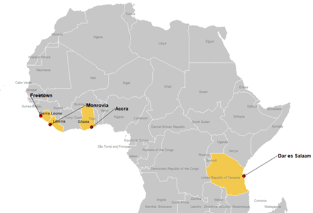
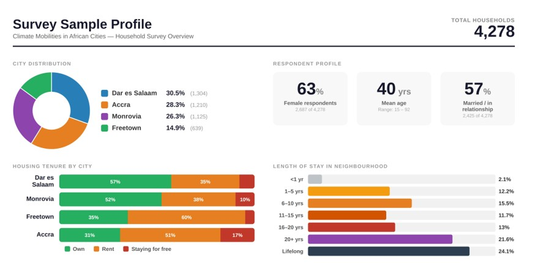
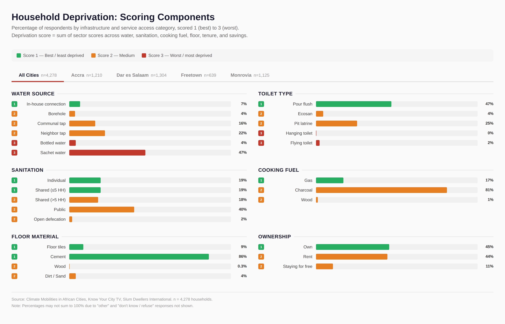
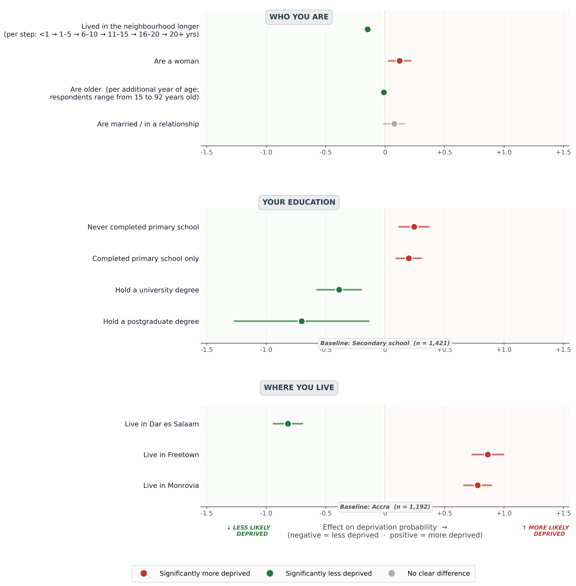
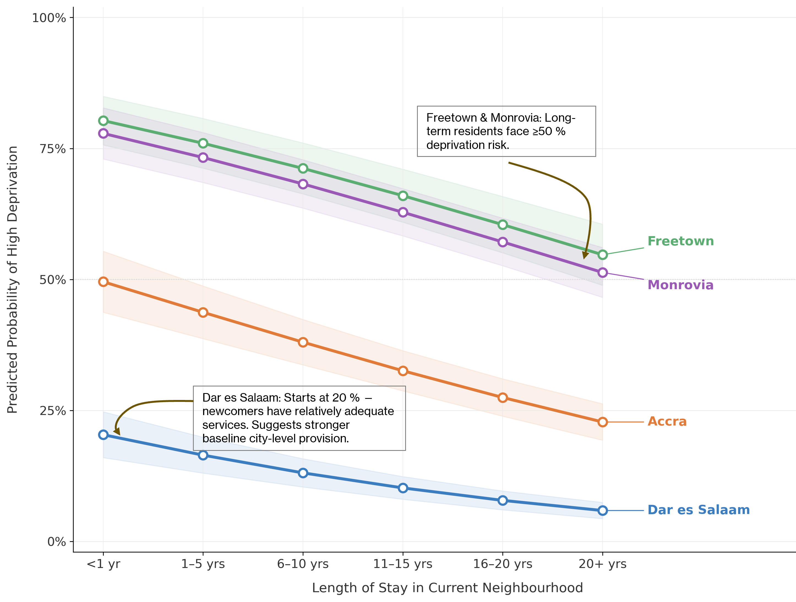
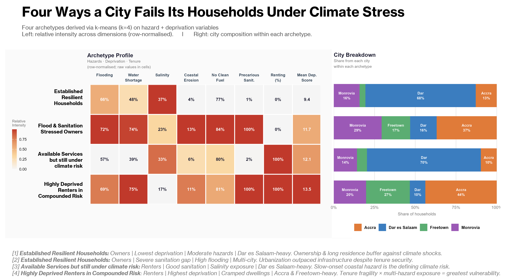
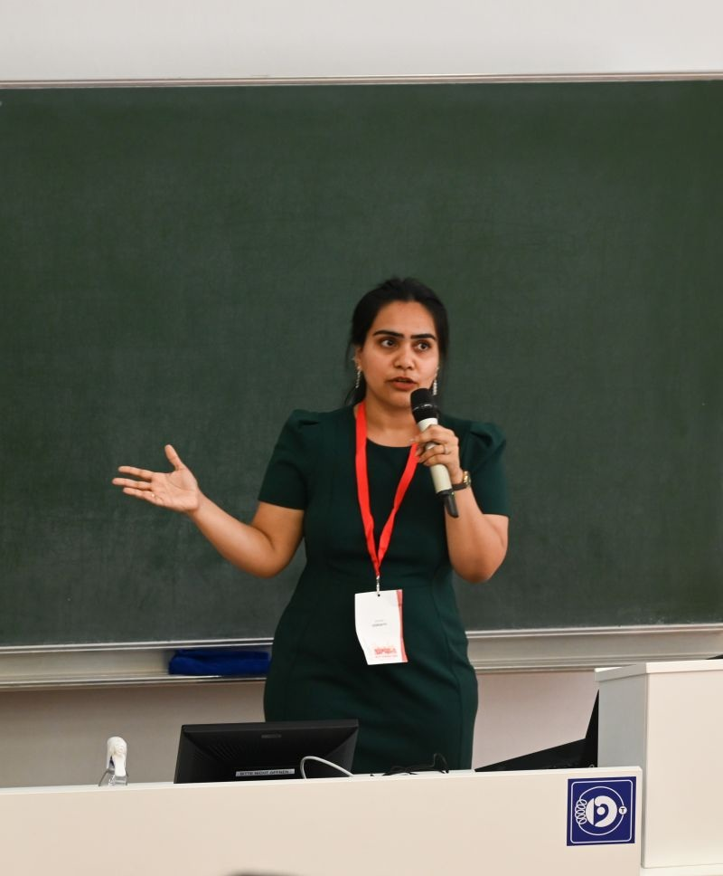
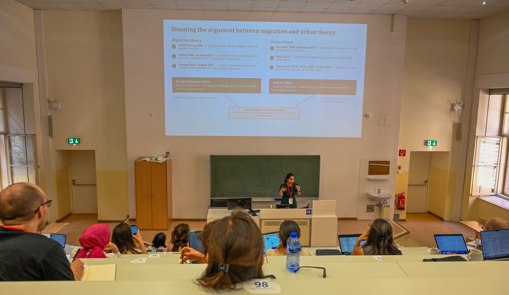
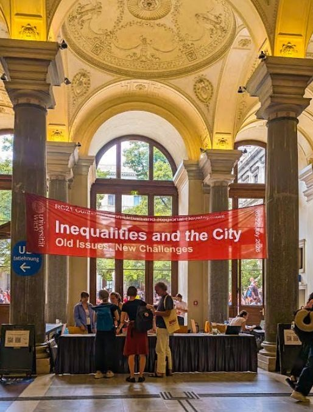

01
Longer residence is associated with lower deprivation.
Households that have lived longer in their neighbourhood tend to show a lower predicted probability of high infrastructure deprivation.
My work moves across climate mobility, migration governance, quantitative social research, urban institutions and policy — combining statistical analysis with grounded and interpretive inquiry.
My doctoral work examines mobility, immobility and adaptation under ecological stress, with particular attention to institutions and anticipatory governance.
Beyond the dissertation, I work on urban inequality, quantitative migration research, city governance, protection pathways, policy systems and urban spatial life.
Rather than one disciplinary lane, my work develops across connected questions about mobility, institutions, inequality, cities and governance.
Climate mobility, livelihood transitions, mobility and immobility under ecological stress, and the institutions that shape household strategies before displacement becomes visible.
A theoretical project asking how migration and urbanization look when attention shifts to the period before arrival: preparation, waiting, circulation, adaptation and constrained mobility.
Regression-based analysis of migration status, infrastructure deprivation and inequality in low-income urban settlements, alongside multidimensional index construction.
Research on climate-related displacement, protection pathways, humanitarian-migration systems, adaptation institutions, ecological profiling and human-security frameworks.
Comparative research on subnational fiscal capacity, local climate adaptation, urban fragility, city-regions and the institutional conditions that shape local response.
Research on how everyday urban environments are transformed through religious practices, spatial adaptation and transcultural forms of placemaking.
How Intermediaries Shape Mobility and Displacement Across Ecological Gradients asks what becomes visible when migration research shifts attention from arrival to the period in which households are already adapting, preparing, circulating, waiting or becoming unable to move.
What changes theoretically and politically when migration is studied before people arrive in cities rather than only after movement has occurred?
ContributionThe project connects migration research with urban theory, institutional intermediation and anticipatory forms of governance.
This project examines how migration histories, length of residence, household characteristics and urban context intersect with infrastructure deprivation in low-income settlements across Accra, Dar es Salaam, Freetown and Monrovia.

The harmonized dataset contains 4,278 respondents: 1,304 in Dar es Salaam, 1,210 in Accra, 1,125 in Monrovia and 639 in Freetown.
The survey captures variation in housing tenure, neighbourhood residence and household characteristics, allowing the analysis to ask whether becoming more established in a neighbourhood translates into greater infrastructure security.

Household deprivation is constructed from multiple dimensions of everyday infrastructure and housing conditions rather than from a single service indicator.
Water and sanitation access, cooking fuel, housing materials and tenure conditions reveal substantial variation in the material circumstances experienced by households.

The models point away from a simple migrant-versus-resident explanation of deprivation. Household resources and duration of residence matter, but substantial differences between cities remain.
Households that have lived longer in their neighbourhood tend to show a lower predicted probability of high infrastructure deprivation.
Higher educational attainment is associated with lower deprivation, while limited schooling is associated with greater deprivation relative to the secondary-school baseline.
Relative to Accra in the displayed model, deprivation is substantially higher in Freetown and Monrovia and lower in Dar es Salaam, suggesting strong contextual differences between urban systems.
The displayed probit model compares individual characteristics, education, neighbourhood residence and city location.
Longer residence and higher education are associated with lower deprivation, while city-level differences remain large. Infrastructure precarity therefore cannot be understood through household characteristics alone.

Predicted deprivation declines with neighbourhood residence in all four cities.
But the trajectories remain substantially separated. Even among long-term residents, predicted deprivation remains much higher in Freetown and Monrovia than in Dar es Salaam, with Accra occupying an intermediate position.

A descriptive k-means analysis combines hazard, deprivation and tenure indicators to identify four household configurations. The archetypes show that vulnerability can emerge through different combinations of infrastructure access, tenure position and environmental exposure.

This cluster shows the lowest mean deprivation of the four archetypes despite meaningful environmental exposure. Dar es Salaam households form the largest share.
Ownership does not necessarily imply infrastructure security. This configuration combines flooding and water pressures with especially severe sanitation deprivation.
Comparatively stronger service access can coexist with environmental vulnerability. This profile is renter-heavy and strongly represented by Dar es Salaam households.
The highest-deprivation configuration combines rental tenure with severe service deficits and multiple hazards. Accra and Freetown contribute heavily to this profile.
Urban deprivation cannot be reduced to migration status or length of residence alone. Longer residence is associated with improved infrastructure security, but substantial differences between cities persist. Vulnerability is also configurational: tenure, services and environmental exposure combine differently across urban contexts.
I presented Anticipatory Urbanism: How Intermediaries Shape Mobility and Displacement Across Ecological Gradients at the RC21 Conference on inequalities and the city.
The presentation explored how shifting migration research toward the period before arrival changes the role we assign to institutions, adaptation and urban policy.
Read the Paper →


Climate mobility, intermediation and the period before arrival.
Quantitative analysis of compound vulnerability and climate-related internal displacement.
Politics of knowledge production and measurement in global climate mobility governance.
Special contribution to GOLD VII on local democracy, decentralization and economies of care.
Urban institutions, crisis response and care infrastructures.
United Nations High-Level Meeting on the New Urban Agenda.
Feminist storytelling, emotional infrastructure and everyday humanitarianism in the Sundarbans.
Read Essay →Religion, spatial adaptation and the everyday city.
Read Essay →How religious and spatial practices produce transcultural forms of urban belonging.
Read Essay →Architecture, religious diversity and transformed devotional space in Queens.
Read Essay →A graduate seminar examining cities and urbanization through demographic, economic, institutional, infrastructural, spatial, social and cultural perspectives.
Julien J. Studley Graduate Programs in International Affairs · The New School
Teaching and mentoring undergraduate students through lecture-discussion sessions, urban observation, field trips and research-paper development.
Eugene Lang College of Liberal Arts · The New School
RC21 Conference · Vienna, Austria
Environmental and Climate Mobilities Network · Wageningen, Netherlands
Uncertainty and Cities in 2026 · The New School · New York
ECMN Conference · UNU-EHS · Bonn, Germany
Tata Institute of Social Sciences · Mumbai, India
Quantitative migration research, infrastructure deprivation, African Cities datasets and global migration expertise mapping.
Protection pathways, climate-related displacement, ecological profiling and migration governance.
Subnational fiscal capacity, adaptation, city-regions, care infrastructures and urban governance.
Religious diversity, devotional space, urban transformation and transcultural placemaking in Queens.
SDG localization, national development planning, crisis response, urban policy analysis, NLP-assisted research and programme dashboards.
Urban missions, SDG localization, institutional convergence and urban governance in India.
Regression modeling · probit · OLS · instrumental variables · Heckman models · interactions · robust regression · Blinder–Oaxaca decomposition · deprivation indices · survey analysis
R · Python · OpenAlex · Scopus · research database design · literature mapping · NLP-assisted policy analysis · dashboards
QGIS · Sentinel-2 · NDWI · settlement-growth analysis · exposure mapping · infrastructure vulnerability · climate-risk mapping
Stakeholder analysis · institutional mapping · participatory planning · policy research · interpretive analysis · site-based research
For research collaborations, academic conversations, policy work, teaching and speaking opportunities.